Real track integration, zone-aware driver strategy, lap-based race simulation, and full IMS Infield Road Course profile from GPS + elevation data.
Version 9 transforms the simulation from an abstract fixed-time run into a competition-accurate race model. Four laps of the IMS Infield Road Course (Indianapolis) are simulated with the vehicle governed by Shell Eco-Marathon Article 226 rules: 4 laps × 3832.5 m = 15,330 m total, maximum 35 minutes (2100 s), minimum average speed 7.30 m/s.
The core modeling additions are a GPS-derived track profile with 767 breakpoints at 5-meter resolution, a grade force term in the vehicle dynamics equation, and a zone-aware driver strategy that selects between burn-coast, cruise-hold, and corner-hold behavior based on the vehicle's position within the lap. Analysis output has been fully rebuilt around lap-based metrics: per-lap time, fuel, and km/L are reported alongside race-level pass/fail validation against Article 226 thresholds.
x_Vehicle ≥ 15,330 m (4 full laps)
rather than a fixed t_end. Race metrics are computed at lap
completion indices, providing per-lap breakdowns consistent with how Shell
scoring is actually applied.
attempt_valid flag and time margin are reported in the command
window and plotted as title annotations on Fig 1.
sem-us-2022-track_coordinates.csv (3833 GPS points, ~1 m spacing)
and sem_2023_us.csv (2696 GPS + elevation points). Curvature was
computed with a 15 m sliding window; turns detected at ≥ 0.5 deg/m. 19 turn
complexes identified, producing a three-zone classification at 767 breakpoints.
F_grade = m × g × grade is included in the force balance at every
simulation step via a 1-D lookup on track_grade. Track elevation
range is 3.8 m with a max practical grade of ~0.9%. Sign convention: positive
(uphill) is resistive, negative (downhill) is assistive.
v_low_on and v_high_on. Zone 2 (short straights,
47.0% of lap): cruise-hold at v_target = 7.45 m/s. Zone 3
(turn complexes, 18.4% of lap): corner-hold at zone speed limit.
v_target raised
from 7.0 to 7.45 m/s to guarantee minimum average speed ≥ 7.30 m/s (Article
226). At v_target = 7.45 m/s, estimated lap time is 497.7 s × 4 = 1991 s,
giving a 109 s margin against the 2100 s time limit.
m = 100 kg and
G = 10 pending final drivetrain assembly measurements.
The track profile was derived from two official Shell Eco-Marathon GPS datasets for the Indianapolis Motor Speedway infield circuit. Distance along the track was computed using the haversine formula between consecutive GPS coordinates, and curvature was estimated with a 15-meter sliding window. Any section exceeding 0.5 deg/m angular change was classified as a turn zone with a 10-meter lead-in and lead-out buffer.
| Total lap distance | 3,832.5 m |
| Turn complexes detected | 19 (curvature threshold 0.5 deg/m) |
| Zone 1 — long straight (burn-coast) | 1,325 m (34.6%) — includes main 1325 m straight |
| Zone 2 — short straight (cruise-hold) | 1,800 m (47.0%) |
| Zone 3 — turn zones (corner-hold) | 705 m (18.4%) |
| Elevation range | 3.8 m total | net change ~0 m (closed loop) |
| Max practical grade | ~0.9% (brief) — grade force term included in dynamics |
| Tightest turn | R = 19.3 m at x ≈ 3132–3176 m → v_corner = 7.54 m/s |
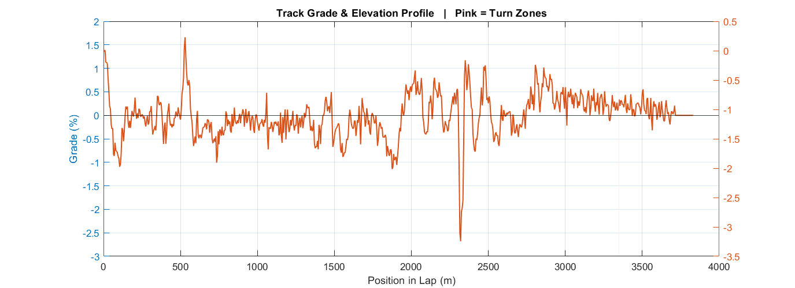
Fig 5 — Grade % (left axis) and relative elevation m (right axis) vs position in lap. Pink = turn zones.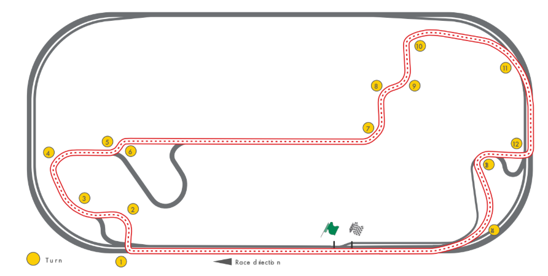
Shell's provided track outline, with red outline being the competitor track.
The V8 Stateflow burn-coast controller is extended in V9 to a three-mode
strategy that responds to the vehicle's position within the lap. At each
timestep, a 1-D lookup on track_zone returns the active zone,
which selects the operating mode and speed reference fed to the Stateflow
state machine.
| Zone | Condition | Strategy | Speed Reference |
|---|---|---|---|
| 1 | Long straight (> 200 m) | Burn-Coast (Stateflow hysteresis) | v_low_on = 7.5 m/s / v_high_on = 8.0 m/s |
| 2 | Short straight (< 200 m) | Cruise-Hold | v_target = 7.45 m/s |
| 3 | Turn / corner zone | Corner-Hold | track_v_limit (per-turn, 7.54–8.50 m/s) |
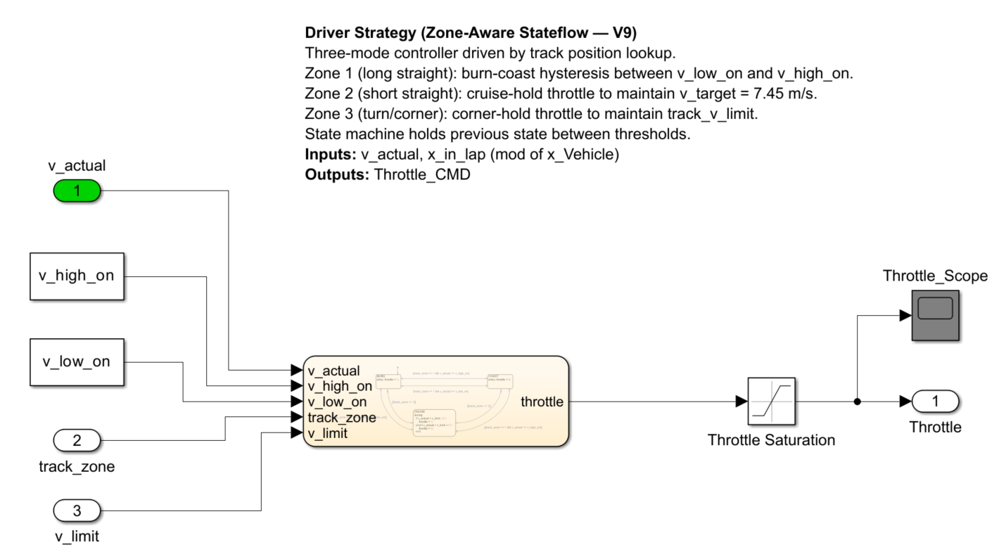
Zone-Aware Driver Strategy — track zone lookup, mode selector, Stateflow integration.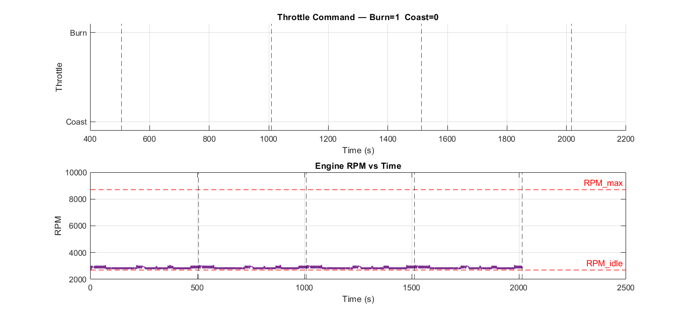
Fig 4 — Throttle (Burn/Coast, top) and engine RPM with idle/max limits (bottom). Lap markers shown.
Baseline V9 run parameters: v_low=7.2, v_high=7.7, v_target=7.45 m/s,
G=10, m=100 kg, Cd=0.30, 4 laps × 3832.5 m.
Full four-lap speed trace with lap markers, speed threshold lines, and race summary in the title. Zone transitions are visible in the speed envelope pattern — the long burn-coast straight produces the widest oscillation bands while turn zones show a tighter, held speed profile.
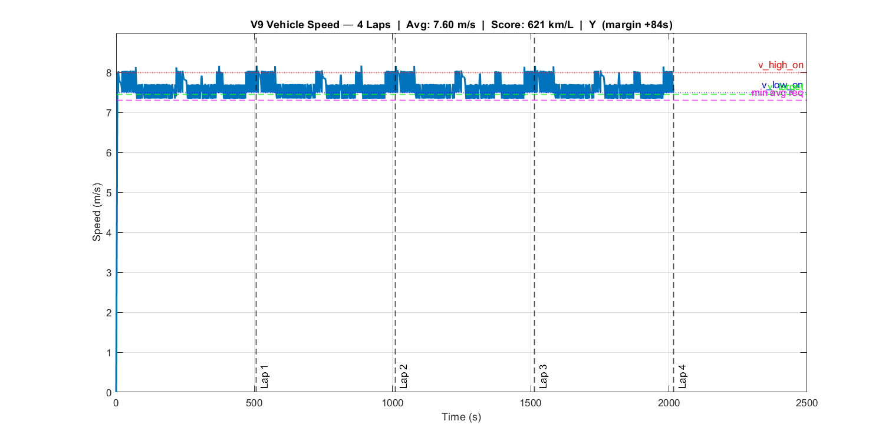
Fig 1 — Full race speed trace. v_high_on (red), v_low_on (blue), v_target (green), v_min_avg (magenta). Lap markers dashed. Title shows avg speed, Shell Score, pass/fail, time margin.All four laps plotted on the same distance axis to visualize lap-to-lap consistency. Zone shading applied in the background: white for burn-coast eligible straights, grey for short straights, pink for turn complexes. Legend shows only the 4 named lap lines.
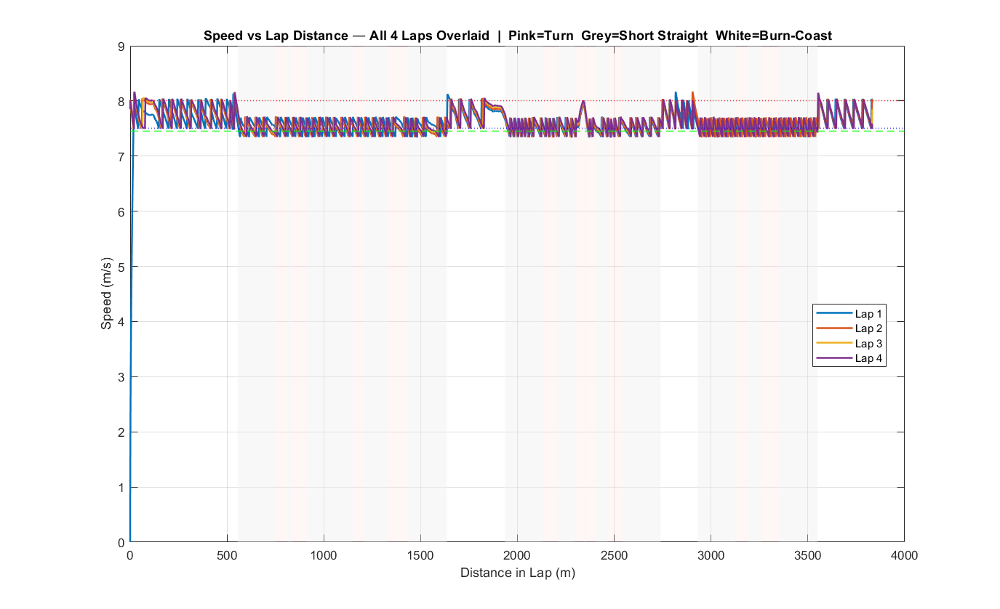
Fig 2 — All 4 laps on one distance axis. Zone shading in background. Legend: Lap 1–4 only. Consistent profiles confirm steady-state from lap 1.Two-panel figure showing cumulative fuel consumption (top) and live km/L score (bottom) vs total distance. Fuel signal steps during burn phases and is flat during coast — a clean stepped profile confirms no energy leakage during coast. The rolling km/L converges after ~1–2 laps once startup transients clear.
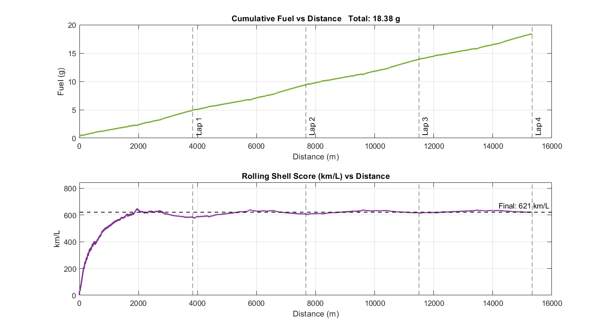
Fig 3 — Cumulative fuel (g) top, rolling Shell Score (km/L) bottom. Stepped fuel profile confirms no coast leakage. km/L converges after lap 2.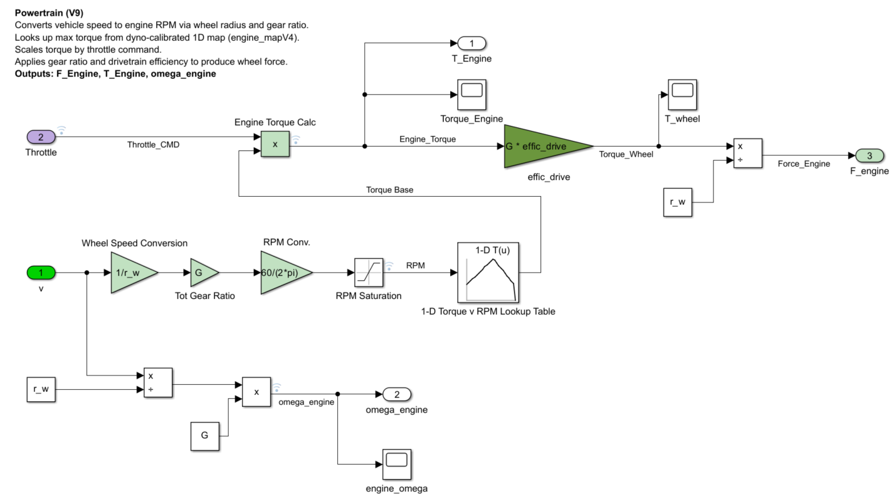
Powertrain Subsystem — torque map lookup, gear ratio G, drivetrain efficiency, wheel force output.Dual-axis plot showing grade percentage (left, orange) and reconstructed relative elevation in meters (right, blue) vs position within the lap. Elevation is integrated from grade × distance starting at zero. The track is a closed loop with ~3.8 m total elevation variation and near-zero net change per lap. Pink shading marks turn zones.
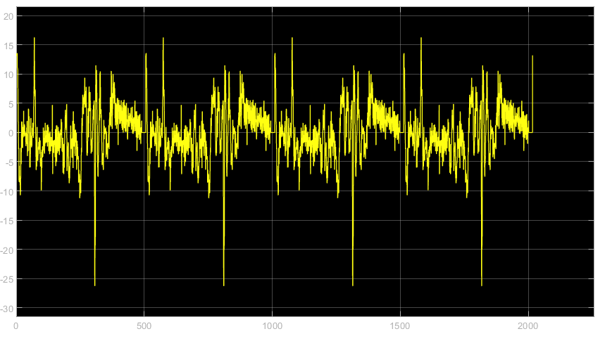
F_grade = m × g × grade vs position — peak resistive/assistive values around the lap.Two MP4 animations visualize vehicle behavior in a spatial context using the GPS-derived track coordinates.
Real-time position of the vehicle moving around the IMS infield circuit, colored by instantaneous speed or zone mode. Throttle state (burn/coast/hold) annotated alongside the vehicle icon.
Two vehicles run simultaneously on the same track: the V9 baseline (burn-coast with zone strategy) vs a comparison run — either a different parameter set, a pure cruise-hold strategy, or a V8 baseline. Separation distance and cumulative fuel delta shown in a live HUD overlay.
Shell Eco-Marathon scoring is km/L — higher is better. The 2025 Americas ICE Prototype class results provide the benchmark target range for this vehicle.
| Rank | Team | Score (km/L) | Notes |
|---|---|---|---|
| — | BYU (2024 reference) | 995 | Fully covered wheels, professional build |
| 1 | Mater Dei HS | 718 | 2025 Americas champion |
| 2 | IFRS Erechim | 629 | |
| 3 | Michigan Tech | 323 | |
| 4 | Cedarville University | 315 | |
| 5 | Penn St Behrend | 177 | |
| 6 | Schurr HS | 92 | |
| — | This vehicle (V9 simulation) | 621.3 km/L | m=100 kg, Cd=0.30, G=10, effic=0.20 (fixed) |
The V8 baseline produced approximately 536–651 km/L depending on speed band settings. With the V9 track profile, grade forces, and zone strategy the competition-scoring run will provide the first directly comparable result to this field.
| F_drag | = ½ × 1.225 × 0.30 × 0.3985 × 7.45² ≈ 4.07 N |
| F_roll | = 0.005 × 100 × 9.81 ≈ 4.91 N |
| F_resist (flat) | ≈ 8.98 N |
| Coast deceleration | ≈ −0.090 m/s² |
| Max grade force (0.9%) | = 100 × 9.81 × 0.009 ≈ 8.83 N (~98% of flat F_resist) |
The max grade force is comparable to total flat resistance — confirming the grade term is non-negligible at this track and correctly belongs in the dynamics equation.
Representative output from analyzeV9_track_shell_eco.m
after a completed 4-lap run.
=== Shell Eco Run Results (V9) === Total distance: 15330.0 m (target 15330 m) Total time: 2016.2 s (33.6 min) Time limit: 2100 s (35 min) Time margin: +83.8 s Attempt valid: YES ✓ Avg speed: 7.604 m/s (min required 7.300 m/s) Fuel consumed: 0.0184 kg (18.38 g) Fuel consumed: 0.0247 L Shell Score: 621.3 km/L --- 2025 Field Comparison --- vs BYU (rank 1) 995.0 km/L → you are 62.4% vs Mater Dei (2) 718.0 km/L → you are 86.5% vs IFRS Erechim (3) 629.0 km/L → you are 98.8% vs Michigan Tech (4) 323.0 km/L → you are 192.4% vs Cedarville (5) 315.0 km/L → you are 197.2% vs Penn St Behrend (6) 177.0 km/L → you are 351.0% vs Schurr HS (7) 92.0 km/L → you are 675.3% --- Per-Lap Breakdown --- Lap Time(s) LapTime(s) AvgSpd Fuel(g) km/L 1 505.8 505.8 7.578 4.911 581.4 2 1009.3 503.5 7.611 4.506 633.6 3 1512.8 503.5 7.612 4.486 636.5 4 2016.2 503.4 7.613 4.478 637.5 --- Force Balance at v_target = 7.5 m/s (flat) --- F_drag: 4.06 N F_roll: 4.91 N F_resist (flat): 8.97 N Coast decel: -0.0897 m/s² Coast band time (8.0→7.5 m/s): 5.6 s Max uphill grade: 1.66% → F_grade = 16.28 N (181.6% of F_resist) F_Engine check: CLEAN — no leakage during coast --- Coast Shape --- Linear RMSE: 0.03690 m/s Exponential RMSE: 0.03473 m/s Result: CURVED (exponential) — physics correct
Lap 1 fuel (4.91 g) is higher than laps 2–4 (~4.48–4.51 g) due to acceleration from rest at t=0. Laps 2–4 are within 0.6% of each other, confirming steady-state cycling was established by lap 2. The max uphill grade of 1.66% produces a grade force (16.28 N) that is 1.8× flat rolling resistance — this is the dominant terrain feature on the IMS infield circuit and drives the lap 1 vs lap 2+ fuel difference.
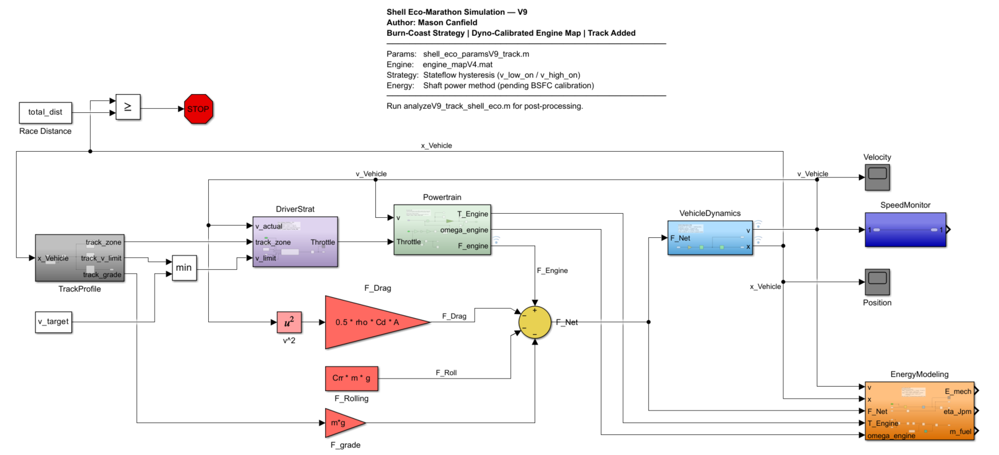
Full System Overview — DriverStrat (zone-aware), Powertrain, VehicleDynamics (F_grade), EnergyModeling, lap counter.
Five independent parameter sweeps were run on the full lap-distance simulation
with the IMS track profile and zone-aware strategy active. All scores reported
in km/L (Shell competition metric). Race time is shown alongside score to confirm
Article 226 compliance (t < 2100 s) at each sweep point. Baseline:
v_low=7.2, v_high=7.7, G=10, m=100 kg, Cd=0.30, effic=0.20 → 621.3 km/L.
A 2D sweep of v_low (7.0–8.0 m/s) vs v_high evaluated
on the full IMS lap. The optimal band sits at the lowest v_low tested,
consistent with V8 findings — wider and lower bands keep the engine in longer,
higher-efficiency burn cycles and reduce cycle frequency. All tested configurations
remain Article 226 compliant; the time margin narrows as the band widens.
v_low = 7.0 m/s, v_high = 7.5 m/s →
628.0 km/L | t_total = 2039.5 s (margin +61 s)
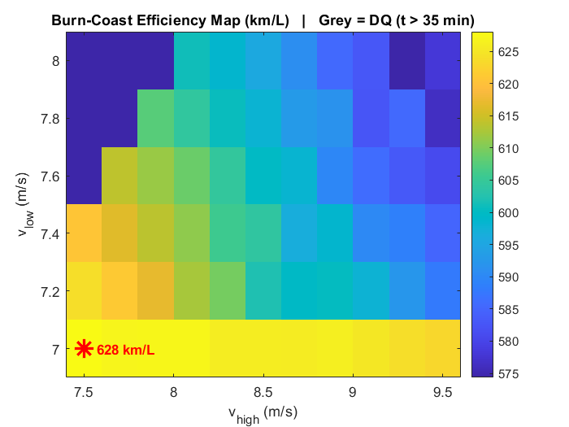
Sweep 1 — 2D heat map: v_low (y) vs v_high (x), color = km/L. Optimum at lower-left.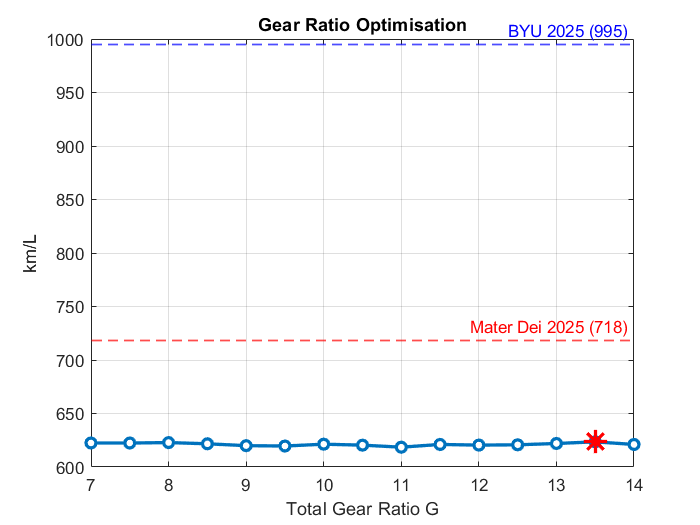
Sweep 2 — Near-flat plot confirming gear ratio has minimal efficiency impact across G=7–14.Gear ratio swept from G = 7.0 to G = 14.0. The full range produces only a ±0.8% variation in Shell score — confirming gear ratio is not a meaningful efficiency lever at this vehicle's operating speed, consistent with V8. The practical constraint remains keeping engine RPM within the valid dyno map range (2708–8708 RPM) at operating speed, not efficiency optimization.
| G | km/L | t (s) |
|---|---|---|
| 7.0 | 622.5 | 2025 |
| 8.0 | 622.8 | 2023 |
| 9.0 | 619.9 | 2016 |
| 10.0 | 621.3 | 2016 |
| 11.0 | 618.5 | 2012 |
| 12.0 | 620.5 | 2022 |
| 13.5 | 623.5 | 2023 |
| 14.0 | 621.1 | 2021 |
Mass swept from 80 kg to 180 kg. The relationship is smooth and monotonic — every 10 kg of additional mass costs approximately 25–30 km/L on the IMS track. Rolling resistance scales directly with mass, and the grade force term also scales with mass, making mass reduction doubly impactful on a track with grade.
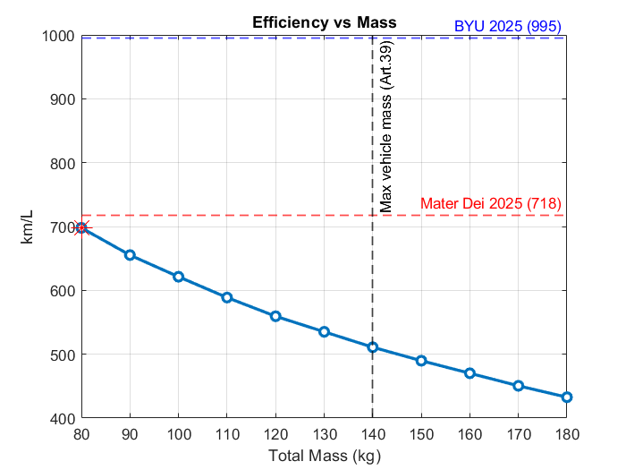
Sweep 3 — Monotonically decreasing. 80 kg = 697.9 km/L vs 432.7 km/L at 180 kg. Each 10 kg ≈ 25–30 km/L penalty.| Mass (kg) | km/L | t (s) |
|---|---|---|
| 80 | 697.9 | 2022 |
| 90 | 655.2 | 2011 |
| 100 | 621.3 | 2016 |
| 110 | 588.7 | 2016 |
| 120 | 559.4 | 2020 |
| 140 | 510.9 | 2027 |
| 160 | 470.2 | 2029 |
| 180 | 432.7 | 2021 |
Cd swept from 0.05 to 0.55. The relationship is nearly linear across the tested range. At ~7.6 m/s operating speed, aerodynamic drag and rolling resistance are of similar magnitude at the baseline Cd=0.30, so drag reduction has significant leverage. Halving Cd from 0.30 to 0.15 improves score by 29% (621 → 804 km/L); reducing to Cd=0.05 approaches 1000 km/L.
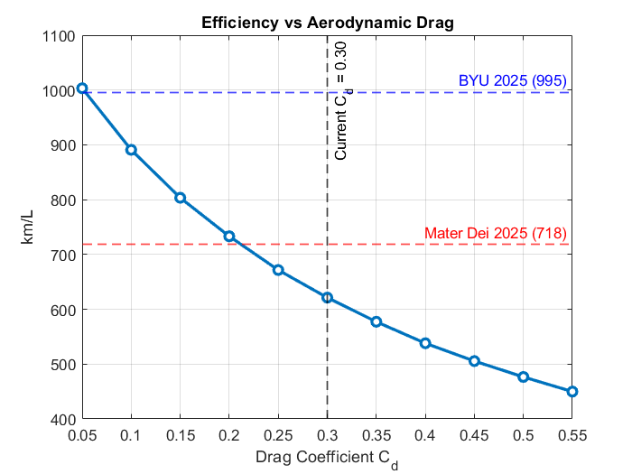
Sweep 4 — Near-linear improvement with reduced drag. Cd=0.05 crosses 1000 km/L; Cd=0.15 reaches Mater Dei 2025 territory.| Cd | km/L |
|---|---|
| 0.05 | 1003.3 |
| 0.10 | 890.9 |
| 0.15 | 803.5 |
| 0.20 | 733.2 |
| 0.25 | 671.7 |
| 0.30 | 621.3 |
| 0.40 | 538.1 |
| 0.55 | 449.9 |
Engine thermal efficiency swept from 8% to 34% to bracket the uncertainty in the
fixed effic_engine = 0.20 assumption. The relationship is perfectly
linear — Shell score scales exactly proportionally with efficiency because fuel mass
= shaft energy ÷ (efficiency × LHV). This sweep quantifies the model's largest
unknown: every 2 percentage points of engine efficiency is worth approximately
62 km/L. If the actual engine achieves 26% efficiency (typical for a well-tuned
small 4-stroke), the score would reach ~808 km/L, comfortably in the Mater Dei range.
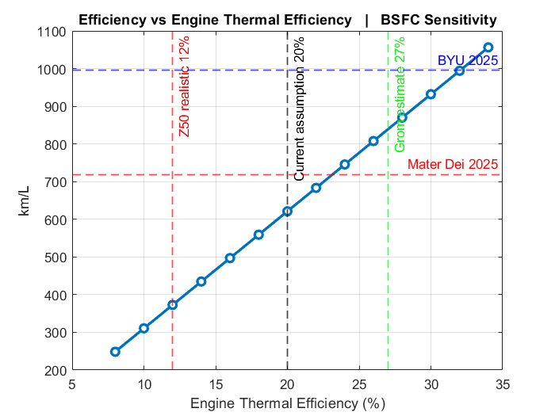
Sweep 5 — Perfectly linear, score ∝ efficiency. 20% = 621 km/L baseline. Each 2% = ~62 km/L.| η_eng | km/L | Context |
|---|---|---|
| 8% | 248.5 | |
| 12% | 372.8 | |
| 16% | 497.1 | |
| 20% | 621.3 | ← baseline |
| 22% | 683.5 | Mater Dei range |
| 24% | 745.6 | Mater Dei+ range |
| 28% | 869.8 | |
| 32% | 994.1 | BYU 2024 range |
| 34% | 1056.2 |
Sensitivity measures the percentage improvement from worst to best value within each sweep range on the IMS full-lap simulation. Drag coefficient again leads by a wide margin; engine efficiency (previously assumed constant) enters the ranking as the second-highest lever and the largest model uncertainty.
F_grade = m × g × grade added to vehicle dynamicsHandleVisibilityF_brake for corner deceleration phases